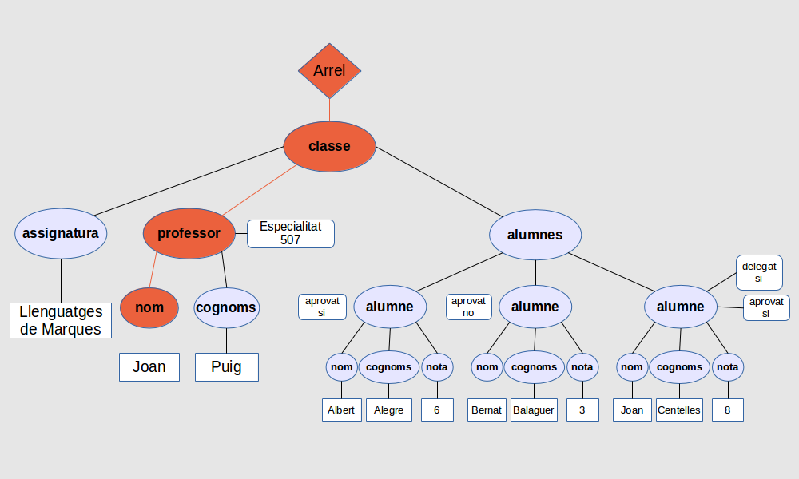
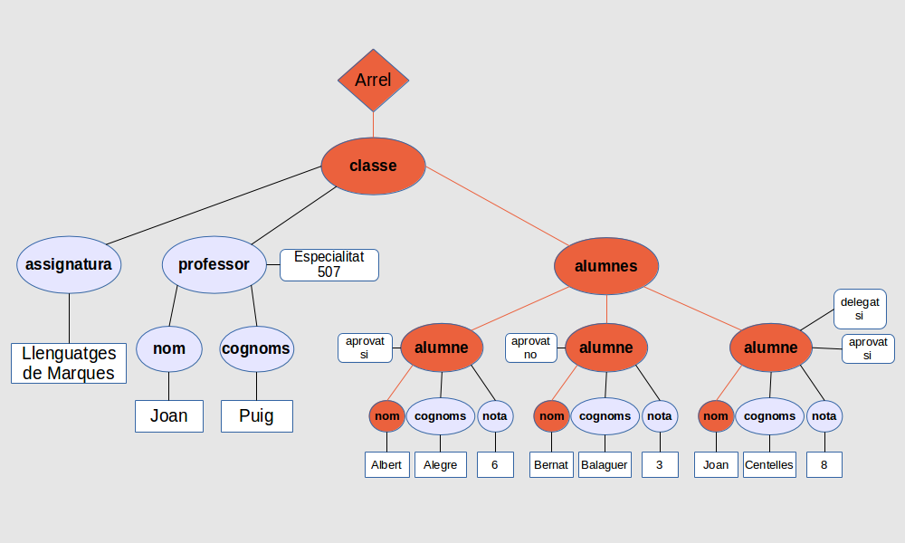
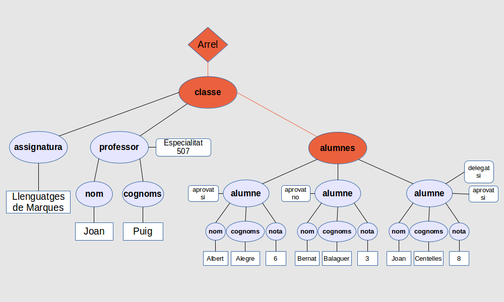
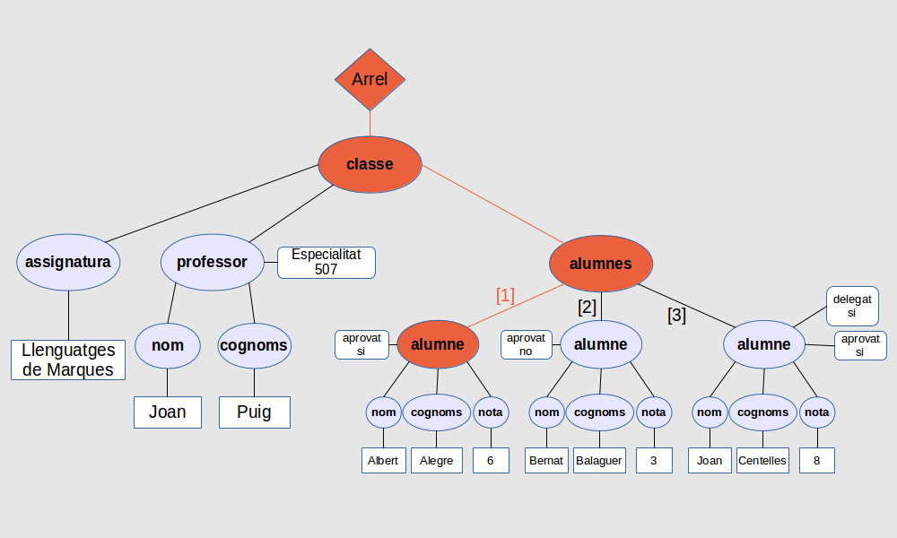
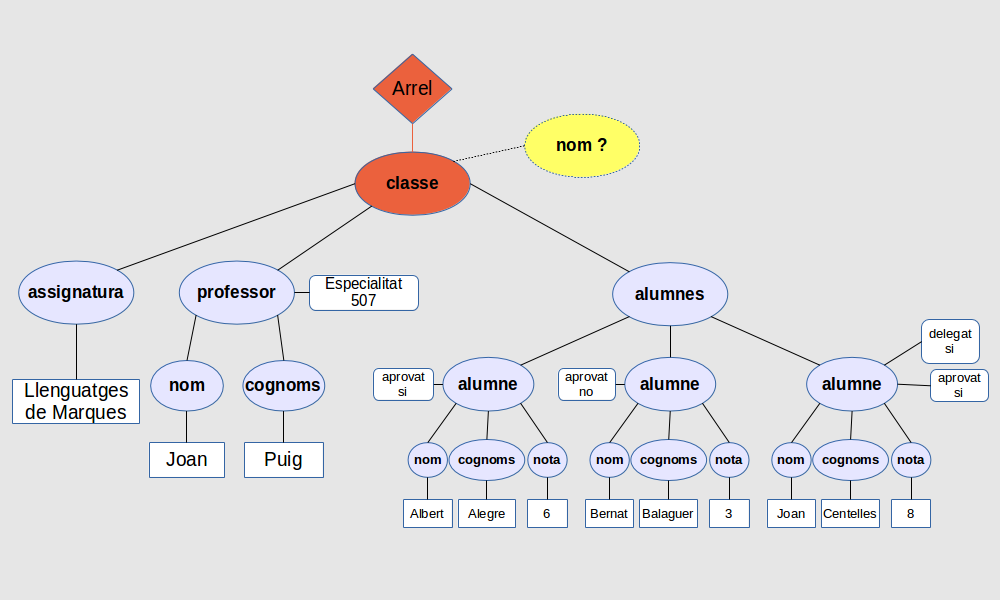

Com que la representació interna del document XML per XPath serà un arbre, es pot navegar per ell especificant camins d’una manera semblant a com es fa en els directoris dels sistemes operatius.
El més important per tenir en compte a l’hora de crear una expressió XPath és saber quin és el node en el qual està situat el procés (node de context), ja que és des d’aquest que s’avaluarà l’expressió. El node de context al principi és el node arrel però es va movent a mesura que es van avaluant les expressions, i per tant podem expressar els camins XPath de dues maneres:
-
Camins absoluts
-
Camins relatius
Els camins absoluts són camins que sempre comencen en l’arrel de l’arbre. Es poden identificar perquè el primer caràcter de l’expressió sempre serà l’arrel ”/”. No importa quin siga el node de context si es fan servir camins absoluts, perquè el resultat sempre serà el mateix.
En canvi, els camins relatius parteixen des del node en el qual estem situats.
Per exemple, es pot obtenir el node <nom> del professor de l’exemple anterior fent servir l’expressió XPath següent:
/classe/professor/nom
Podem veure com s’avalua l’expressió en l’arbre XPath en la següent figura, marcat el camí en taronja:

Observeu que el resultat d’aquesta expressió no és només el contingut de l’element sinó tot l’element <nom>.
Mai no s’ha d’oblidar que l’expressió sempre intenta aconseguir el nombre màxim de camins correctes i, per tant, no necessàriament ha de retornar només un únic valor. Per exemple, si l’expressió per avaluar és la següent:
/classe/alumnes/alumne/nom
XPath l’avaluaria intentant aconseguir tots els camins que quadren amb l’expressió, tal com podeu veure visualment en la següent figura:

i per tant els resultats són (observeu que Joan es refereix al nom del tercer alumne, no del professor):
A pesar que en els exemples anteriors sempre s’han retornat nodes finals això no necessàriament ha de ser així, ja que XPath pot retornar qualsevol tipus d’element com a resultat.
/classe/alumnes
La navegació per l’arbre no difereix massa dels altres casos:

En aquest cas el resultat no és un element simple sinó que és tot un subarbre d’elements.
Si se sap que una expressió retornarà més d'un resultat però només se’n vol un d’específic, es pot fer servir un número envoltat per claudàtors quadrats ”[ ]” per indicar quin és el que es vol aconseguir. Per retornar només el primer alumne podeu fer el següent:
/classe/alumnes/alumne[1]
que tornarà el següent:
ja que dels tres nodes disponibles com a fills de <alumnes>, només se seleccionarà el primer:

Es poden fer servir els claudàtors en qualsevol lloc de l’expressió per fer determinar quina de les branques es triarà. Per exemple, es pot obtenir només el nom del segon alumne amb una expressió com aquesta:
/classe/alumnes/alumne[2]/nom
<nom>Bernat</nom>
Sempre s’ha d’anar amb compte en escriure les expressions XPath, ja que si el camí especificat no es correspon amb un camí real dins de l’arbre no es retornarà cap resultat.
Com que en arribar al node classe no n’hi trobarà cap d’anomenat <nom>, no retornarà cap resultat, com podeu veure si seguiu l’arbre:
